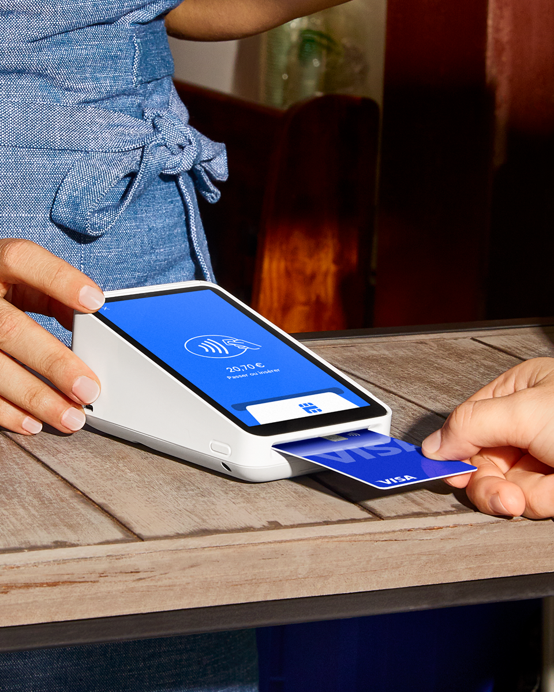

Square Terminal for Point of Sale
Odoo 18 Community Odoo POS checkout Free · AGPL-3
Your Odoo register.
Square for the payment.
Build the basket in Odoo Point of Sale. Send the card amount to your paired Square Terminal and keep the sale, payment and itemized receipt together in Odoo.
Your cash register is Odoo POS.
Choose products in Odoo. The Square Terminal is the customer's payment device.

Square Terminal hardware shown. Sales are prepared in Odoo POS.